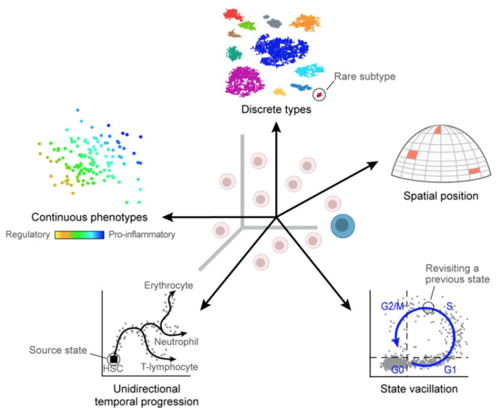

[scRNA-seq 시리즈-1] single-cell RNA-seq 소개
이 글은 Harvard Chan Bioinformatics Core의 scRNA-seq 입문을 번역한 글입니다. 의역이 포함되어있습니다.
왜 single-cell RNA-seq인가?
인간의 조직에는 놀랍도록 다양한 cell type, states, interaction들이 있습니다. 이러한 조직과 세포 유형을 잘 이해하기 위해 single-cell RNA-seq (scRNA-seq)은 개별 세포 수준에서 어떤 유전자가 발현되고 있는지 볼 수 있습니다.
이 흥미롭고 첨단적인 방법을 사용하여 다음을 수행할 수 있습니다:
- 조직에 존재하는 세포 유형을 탐색
- 알려지지 않은/ 희귀 세포 유형이나 상태를 식별
- defferentiation(분화 과정), 시간, 상태에 따른 유전자 발현의 변화를 설명
- 치료나 질병에 대한 조건들간에 특정 세포 유형에서 차등발현하는 유전자 식별
- explore changes in expression among a cell type while incorporating spatial, regulatory, and/or protein information
보다 일반적으로 사용되는 몇 가지 방법은 다음과 같습니다:

scRNA-seq 분석의 과제
scRNA-seq 전에는 세포 발현의 평균을 비교하는 간단한 방법인 bulk RNA-seq을 사용하여 전사체 분석을 수행했었습니다. 이 방법은 전사체를 비교(다른 종에서 추출한 동일한 조직 sample)을 찾거나 질병 연구에서 발현 특질을 정량화하는데 사용됩니다. 또한 sample에서 세포의 이질성(heterogeneity)이 예상되지 않거나 고려되지 않는 경우 질병 바이오 마커 발견도 가능합니다.
bulk RNA-seq은 조건들(treatment or disease) 간의 유전자 발현 차이를 탐색할 수 있지만, 세포 level에서의 차이는 적절하게 감지되지 않습니다. 예를 들어 아래의 이미지를 보면, bulk RNA-seq으로 분석(왼쪽)하면 유전자 A와 유전자 B의 발현 간의 올바른 연관성을 찾을 수 없습니다. 그러나, 세포 유형별, 세포 상태별로 세포를 적절하게 그룹화하면 유전자 간의 올바른 상관관계를 볼 수 있게 됩니다.
 Image credit1
Image credit1
1 Trapnell, C. Defining cell types and states with single-cell genomics, Genome Research 2015 (doi: https://dx.doi.org/10.1101/gr.190595.115)
scRNA-seq은 cellular(세포질) 수준에서 발현을 포착할 수 있음에도 샘플 제작과 라이브러리 준비 등의 비용이 많이 들고 분석은 훨씬 더 복잡하고 해석하기 어렵습니다. scRNA-seq 데이터의 분석 복잡성은 아래가 포함됩니다:
- 대용량 데이터
- cell당 시퀀싱 depth가 낮음
- 세포/샘플들간의 기술적 가변성
- 세포/샘플들간의 생물학적 가변성
각 복잡성에 대해서 자세히 살펴보면 다음과 같습니다:
대용량 데이터
scRNA-seq 실험의 발현 데이터는 수천 개의 cell에 대한 수만, 수십만 개의 read를 나타냅니다.데이터 출력은 훨씬 더 크기 때문에 분석하는데 더 많은 양의 컴퓨터 메모리와 더 많은 저장공간을 요구합니다. 또한, 분석 소요시간의 증가도 필요로 합니다.
cell당 시퀀싱 depth가 낮음
scRNA-seq의 droplet 기반의 방법론 경우, 시퀀싱의 depth가 낮아서 cell당 전사체(transcriptome)의 10~50%만 감지되는 경우가 많습니다. 이로 인해서 많은 유전자에서 0 카운트 값이 생성됩니다. 하지만 특정 세포에서, 유전자의 카운트 값이 0이면 유전자가 발현(expression)되지 않았거나 전사체(transcripts)이 검출되지 않았음을 의미할 수도 있습니다. 세포 전반적으로 발현 수준이 높은 유전자들은 0 카운트 값을 가지는 경향이 있습니다. 이러한 특징때문에, 많은 유전자들이 어떤 세포에서도 감지되지 않을 것이고 유전자 발현이 세포들 사이에서 매우 다양하게 됩니다.
세포/샘플 간 생물학적 변이
생물학적 변이의 지루한 요소들은 세포 간 유전자 발현이 실제 생물학적 세포 유형/상태보다 유사하거나 다르게 나타날 수 있어서 세포 유형 식별을 방해할 수 있습니다. 실험의 연구 부분이 아닌 생물학적 변이의 지루한 요소들은 다음과 같습니다:
- 전사 폭발(Transcriptional bursting): 모든 유전자에 대해 모든 시간에 발현이 켜져 있지 않으며 수확 시간에 따라 각 세포에서 유전자가 켜져 있거나 꺼져 있을 수 있습니다.
- RNA 처리 속도의 변동(Varying rates of RNA processing): 다른 RNA는 서로 다른 속도로 처리됩니다.
- 연속적 또는 이산적인 세포 식별(Continuous or discrete cell identities) (예: 개별 T 세포의 염증 반응 가능성): 연속적인 형질은 유전자 발현에서 가변적이며 연속적인 것과 이산적인 것을 구분하는 것은 때로 어려울 수 있습니다.
- 환경 자극(Environmental stimuli): 세포의 지역적 환경은 공간 위치, 신호 분자 등에 따라 유전자 발현에 영향을 미칠 수 있습니다.
- 시간적 변화(Temporal changes): 세포 주기와 같은 기본적인 변동하는 세포 과정은 개별 세포의 유전자 발현 프로필에 영향을 미칠 수 있습니다.
 Image credit3
3 Wagner, A, et al. Revealing the vectors of cellular identity with single-cell genomics, Nat Biotechnol. 2016 (doi:https://dx.doi.org/10.1038%2Fnbt.3711)
세포/샘플 간 기술적 가변성
기술적 가변성은 생물학적인 세포 유형/상태 대신 기술적 원인에 따라 세포 간 유전자 발현이 유사/다를 수 있으며, 이는 세포 유형 식별을 혼란스럽게 할 수 있습니다. 기술적 가변성에는 다음이 포함됩니다.
- 세포 별 캡처 효율성(Cell-specific capture efficiency): 서로 다른 세포들은 캡처되는 전사체의 수가 다르기 때문에 시퀀싱 깊이(예 : 10-50%의 전사체)에 차이가 있을 수 있습니다.
- 라이브러리 품질(Library quality): 분해된 RNA, 낮은 생존율/죽어 가는 세포, 많은 유리 상태의 RNA, 제대로 분리되지 않은 세포, 그리고 정확한 세포 측정치 등은 낮은 품질 지표로 이어질 수 있습니다.
- 증폭 편향(Amplification bias): 라이브러리 준비의 증폭 단계에서 모든 전사체가 동일한 수준으로 증폭되지는 않습니다.
- 배치 효과(Batch effects): 배치 효과는 scRNA-Seq 분석에서 중요한 문제입니다. 단지 배치 효과에 의한 발현에서도 유의한 차이를 볼 수 있습니다.
 Image credit4
Image credit4
4 Hicks SC, et al., bioRxiv (2015)
잘못된 배치 연구 설계로 인한 문제들을 살펴보려면 이 논문을 참조하세요.
배치가 있는지 확인하는 방법:
- 모든 RNA 분리 작업이 같은 날에 수행되었나요?
- 모든 라이브러리 준비 작업이 같은 날에 수행되었나요?
- 같은 사람이 모든 샘플에 대해 RNA 분리/라이브러리 준비를 수행했나요?
- 모든 샘플에 대해 같은 시약을 사용했나요?
- RNA 분리/라이브러리 준비 작업을 동일한 장소에서 수행했나요?
위 질문 중 어느 하나라도 ‘아니오’라면 배치가 있습니다.
배치와 관련된 모범 사례:
- 가능하다면, 배치를 피할 수 있도록 실험을 설계하세요.
- 배치를 피할 수 없다면:
- 실험에 배치를 혼동시키지 마세요:
 Image credit5
Image credit5 - 다른 샘플 그룹의 복제본을 배치에 걸쳐 분할하세요. 조건 간 DE를 수행하거나 인구 수준에서 결론을 내릴 경우, 복제본이 많을수록 좋습니다(확실히 2개 이상). inDrops를 사용하는 경우, 한 번에 하나의 라이브러리만 준비하므로, 샘플 그룹을 번갈아 가며 준비하세요 (예: 모든 대조 라이브러리를 먼저 준비한 다음 모든 처리 라이브러리를 준비하지 마세요).
 Image credit6
Image credit6 - 실험 메타데이터에 배치 정보를 포함시키세요. 분석 중에 배치로 인한 변동을 제거하거나 배치 간에 통합할 수 있으므로, 해당 정보가 있다면 결과에 영향을 주지 않습니다.
- 실험에 배치를 혼동시키지 마세요:
5 Hicks SC, et al., bioRxiv (2015)
6 Hicks SC, et al., bioRxiv (2015)
Conclusions
scRNA-seq는 단일 세포 해상도로 유전자 발현을 분석하기 위한 강력하고 통찰력 있는 방법이지만, 데이터 분석을 복잡하게 하거나 제한하는 많은 도전과 변동 원인이 있습니다. scRNA-seq 데이터의 분석 과정에서, 데이터에서 관심 없는 변동 원인에 따른 변동을 설명하거나 제거하려고 노력할 것입니다.
전반적으로, 다음을 권장합니다:
- 실험적인 질문에 대한 답변을 얻기 위해, 단일 세포 RNA-seq을 꼭 필요한 경우에만 수행하세요. 더 단순하고 비용 효율적인 대체 방법이 있는지 고려해보세요. 샘플을 병합하여 대량 분석할 수 있는 방법이 있을 수 있습니다.
- 해결하고자 하는 실험 질문의 세부 사항을 이해하세요. 특정 실험에 따라 권장되는 라이브러리 준비 방법과 분석 워크플로우가 달라질 수 있습니다.
- 가능하다면 기술적인 변이 요소를 회피하세요:
- 실험 계획을 전문가와 상의하세요.
- 샘플에서 RNA을 동시에 분리하세요.
- 동일한 시간에 라이브러리를 준비하거나 일괄 처리 효과를 피하기 위해 교대로 샘플 그룹을 나누세요.
- 성별, 연령 또는 일괄 처리 효과 등으로 샘플 그룹을 혼동하지 마세요.
이 글에서는 snRNA-seq를 다루지 않습니다! 아래에는 snRNA-seq에 대한 간단한 개요가 있습니다.
snRNA-seq은 완전한 세포 대신 핵에서의 발현 프로파일을 분석합니다. 예상할 수 있듯이 핵에서 검출되는 전사물이 적습니다(~7,000개의 유전자), 반면 완전한 세포에서는 (~11,000개의 유전자)가 검출됩니다. 일부 상황(연구 자료와 목표에 따라 다름)에서는 scRNA-seq보다 snRNA-seq가 선호되는 방법일 수 있습니다.
snRNA-seq의 몇 가지 장점은 다음과 같습니다:
- 분리하기 어려운 샘플(예: 지방세포)과 동결된 조직에서 잘 작동함
- 분리 과정에서 발생하는 전사 산물에 대한 오류(아티팩트)를 줄여줌
- 덜 편향된 세포 커버리지를 제공함
Reference
- https://hbctraining.github.io/scRNA-seq_online/lessons/01_intro_to_scRNA-seq.html
- Trapnell, C. Defining cell types and states with single-cell genomics, Genome Research 2015 (doi: https://dx.doi.org/10.1101/gr.190595.115